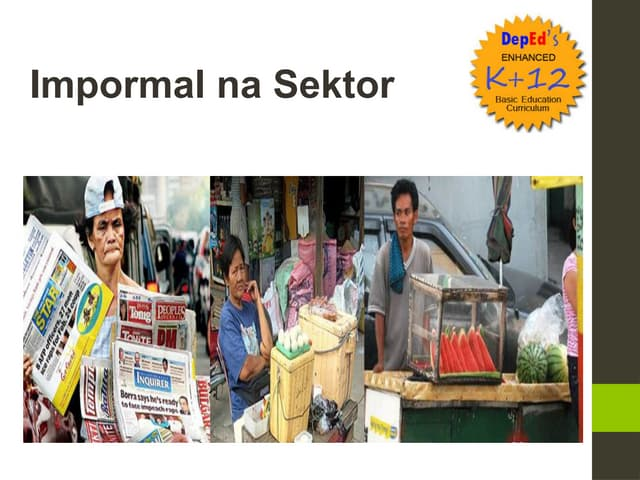
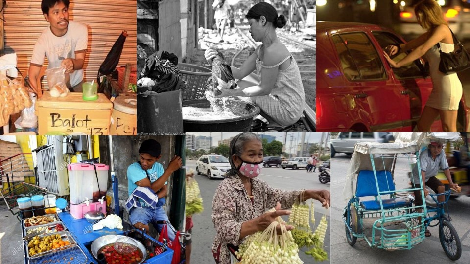

Lesson 5 - Impormal na Sektor
- IMPORMAL NA SEKTOR
- -Sektor ng ekonomiya na walang pormal o salat sa mga dokumentong kailangan sa pagsasagawa ng gawaing pang-ekonomiya
- -Ang kita ng sektor na ito ay HINDI naisasama sa kabuuang Gross Domestic Product (GDP) ng bansa
- -Paraan ng mamamayan upang magkaroon ng kabuhayan/dagdag kita sa tuwing panahon ng pangangailangan
- -Ito ay nagdudulot rin ng pagkakalikha ng mga produkto at serbisyong tutugon sa ating mga pangangailangan
- -Kilala rin sa tawag na Underground Economy
- HALIMBAWA NG MGA TAONG KABILANG SA SEKTOR NA ITO
- 1.Nagtitinda sa kalsada
- 2.Pedicab driver
- 3.Karpintero
- 4.Hindi rehistradong pampublikong sasakyan
- KATANGIAN NG IMPORMAL NA SEKTOR
- -Hindi nakarehistro sa pamahalaan
- -Hindi nagbabayad ng buwis mula sa kinita
- -Walang legal at pormal na balangkas mula sa pamahalaan para sa pagnenegosyo
- IBA’T IBANG ANYO NG IMPORMAL NA SEKTOR
- -Mga gawaing maaaring isakatuparan lamang sa loob ng tahanan
- -Mga gawaing pansibiko, pagkakawanggawa, at panrelihiyon
- -Mga sari-sari stores, pagtitinda sa labas ng bahay o sidewalk, paglalako ng kalakal o serbisyo
- -Ilegal na gawain tulad ng pagnanakaw, pagbebenta ng ilegal na gamot, piracy, at prostitusyon

- KAHALAGAHAN NG IMPORMAL NA SEKTOR
- -Sinasalo nito ang mga mamamayan na hindi makapasok bilang mga regular na empleyado sa isang kompanya.
- -Nagbibigay ng pagkakataon sa maraming Pilipino na makapaghanapbuhay
- -Nagsisilbing tagasalo ng mga mamamayang may mahigpit na pangangailangan
- -Malaki ang naitutulong sa mga konsyumer ang mga kalakal at serbisyong mula sa impormal na sektor dahil sa MURA nitong halaga
- DAHILAN KUNG BAKIT PUMAPASOK SA IMPORMAL NA SEKTOR ANG MGA MAMAMAYAN
- -Makaligtas sa pagbabayad ng buwis sa pamahalaan
- -Makaiwas sa masyadong mahaba at masalimuot na proseso ng pakikipagtransaksyon sa pamahalaan (bureaucratic red tape)
- -Kawalan ng regulasyon mula sa pamahalaan na kung saan ang mga batas at programa ay hindi naitutupad nang maayos
- -Makapaghanapbuhay nang hindi nangangailangan ng malaking kapital o puhunan
- -Malabanan ang matinding kahirapan
- EPEKTO SA EKONOMIYA NG IMPORMAL NA SEKTOR
- -Pagbaba ng halaga ng nalilikom na buwis
- -Banta sa kapakanan ng mga mamimili
- -Paglaganap ng mga ilegal na gawain

- PAGKAKAUGNAY NG AGRIKULTURA AT INDUSTRIYA:
- -Nagmumula sa agrikultura ang mga hilaw na sangkap na ginagamit sa pagbuo ng mga produkto ng industriya.
- -Ang mga ginagamit na traktora, sasakyang pangingisda, at iba pang produkto ay mula sa industriya na ginagamit ng mga magsasaka upang magkaroon ng mataas na produksyon na magbibigay ng malaking kita sa sektor ng agrikultura.
- -Ang dami ng lakas-paggawa sa mga mamimili ay nagpapakita ng lubos na pagtutulungan sa mga sector ng industriya at agrikultura.
- -Ang agrikultura ang pinagmumulan ng pagkain ng mga industriya na siyang tumutugon sa mga pagkaing kinakailangan ng mga tao.
- -Ang industriya ang nagbibigay ng malaking kontribusyon sa ekonomiya
- -Ang mga sangkap ay nagkakaroon ng transpormasyon dahil sa mga lakas–paggawa na gumagawa upang madagdagan ang halaga nito at lalo pang gumanda.
MGA BATAS, PROGRAMA, AT PATAKARANG PANG-EKONOMIYA SA IMPORMAL NA SEKTOR
- 1. Social Reform and Poverty Alleviation Act of 1997 (R.A 8425)
- -Iahon sa kahirapan ang mga Pilipinong kabilang sa impormal na sektor
- -Upang maisakatuparan ang mga probisyon ng batas na ito ay itinatag ang National Anti-Poverty Commission
- 2. Magna Carta of Women (R.A 9710)
- -Inaalis ang lahat ng uri ng diskriminasyon laban sa kababaihan
- 3. Philippine Labor Code (P.D 422)
- -Pangunahing batas ng bansa para sa mga manggagawa na itinatag noong Mayo 1, 1974
- 4. Technical Education and Skills Development Act of 1994 (R.A 7796)
- -Layuning palakasin ang pakikiisa ng iba't ibang sektor upang mapabuti ang kasanayan at kalidad ng yamang tao sa bansa
- 5. Social Security Act of 1997 (R.A 8282)
- -Nagtatakda ng tungkulin ng estado na paunlarin at pangalagaan ang seguridad at kagalingang panlipunan ng mga manggagawa
- 6. National Health Insurance Act of 1995 (R.A 7875)
- -Nagtatag ng Philippine Health Insurance Corporation (PhilHealth) upang matiyak na may maayos at sistematikong kaseguruhang pangkalusugan ang lahat ng Pilipino
MGA PROGRAMA PARA SA MAMAMAYAN
- 1. Dole Integrated Livelihood Program (DILP)
- -Nagbibigay ng pagsasanay at tulong pangkabuhayan para sa sariling hanapbuhay
- 2. Self-Employment Assistance Kaunlaran Program (SEA-K)
- -Tumutulong sa mahihirap na pamilya sa pagsasanay at pagsisimula ng negosyo
- 3. Integrated Services for Livelihood Advancement of the Fisherfolks (ISLA)
- -nagbibigay ng suporta sa pamamagitan ng pagsasanay at pagkakaloob ng kagamitan upang mapaunlad ang kanilang hanapbuhay
- 4. Cash-For-Work Program (CWP)
- -Pansamantalang kita para sa nasalanta, kapalit ng trabahong pang-rehabilitasyon
- 5. Pantawid Pamilyang Pilipino Program (4Ps)
- -Tulong-pinansyal sa pinakamahihirap na Pilipino kapalit ng pagsunod sa mga kondisyong pangkalusugan at pang-edukasyon ng kanilang mga anak
< back to the AP home page